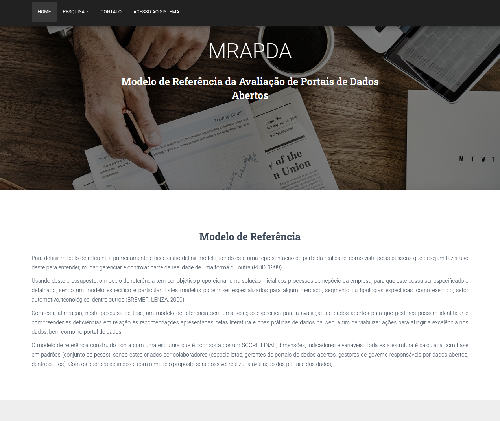
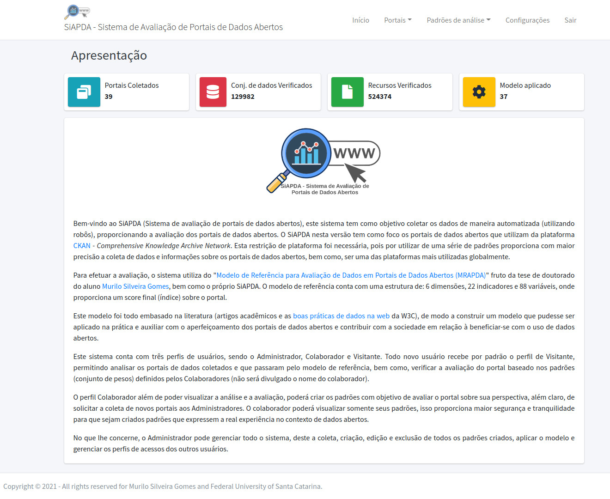
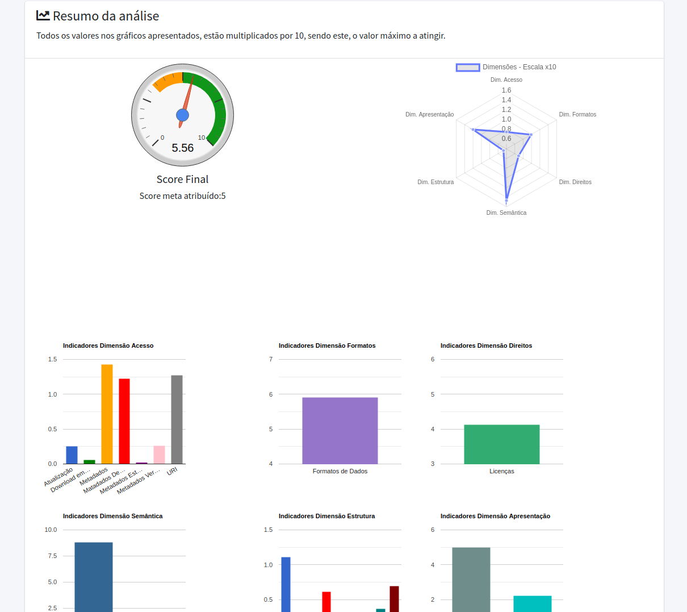
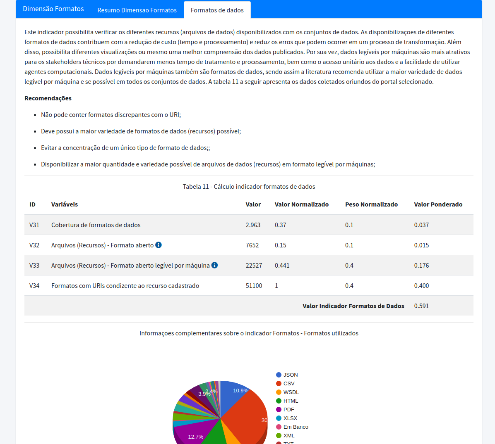

Project Info:
This project was the result of my thesis work, where the Reference Model for the Evaluation of Open Data Portals - MRAPDA. To make automated data collection, model application and evaluation possible, this system called Open Data Portal Evaluation System - SiAPDA was developed. The project also has a research WebPage, where it is possible to access the thesis document, present the defense, view publications and have access to SiAPDA. Access is free, just register to get to know the tool and view the results. It is worth noting that only the administrator can carry out the collections.
Project Details:
- Client:Murilo Silveira Gomes | Federal University of Santa Catarina
- Industry:Public Power / Private Companies that work in the provision of open data
- Technologies:Python, Flask, HTML, CSS, Jquery, Ajax, Selenium, Requests, Beatifulsoup, Pandas, MySQL, others...
- Date:Mar 23, 2021
- Register:Brazilian Software Registration Certificate
- Access
Share: